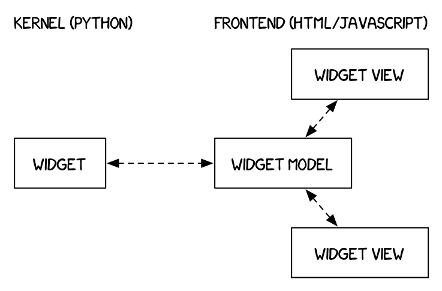

Simple Widget Introduction#
简单的小程序介绍#
What are widgets?#
Widgets are eventful python objects that have a representation in the browser, often as a control like a slider, textbox, etc.
What can they be used for?#
You can use widgets to build interactive GUIs for your notebooks.
You can also use widgets to synchronize stateful and stateless information between Python and JavaScript.
Using widgets#
To use the widget framework, you need to import ipywidgets.
import ipywidgets as widgets
repr#
Widgets have their own display repr which allows them to be displayed using IPython’s display framework. Constructing and returning an IntSlider automatically displays the widget (as seen below). Widgets are displayed inside the output area below the code cell. Clearing cell output will also remove the widget.
widgets.IntSlider()
display()#
You can also explicitly display the widget using display(...).
from IPython.display import display
w = widgets.IntSlider()
display(w)
Multiple display() calls#
If you display the same widget twice, the displayed instances in the front-end will remain in sync with each other. Try dragging the slider below and watch the slider above.
display(w)
Why does displaying the same widget twice work?#
Widgets are represented in the back-end by a single object. Each time a widget is displayed, a new representation of that same object is created in the front-end. These representations are called views.

Widget properties#
All of the IPython widgets share a similar naming scheme. To read the value of a widget, you can query its value property.
w = widgets.IntSlider()
display(w)
w.value
0
Similarly, to set a widget’s value, you can set its value property.
w.value = 100
Keys#
In addition to value, most widgets share keys, description, and disabled. To see the entire list of synchronized, stateful properties of any specific widget, you can query the keys property. Generally you should not interact with properties starting with an underscore.
w.keys
['_dom_classes',
'_model_module',
'_model_module_version',
'_model_name',
'_view_count',
'_view_module',
'_view_module_version',
'_view_name',
'continuous_update',
'description',
'description_tooltip',
'disabled',
'layout',
'max',
'min',
'orientation',
'readout',
'readout_format',
'step',
'style',
'value']
Shorthand for setting the initial values of widget properties#
While creating a widget, you can set some or all of the initial values of that widget by defining them as keyword arguments in the widget’s constructor (as seen below).
widgets.Text(value='Hello World!', disabled=True)
Linking two similar widgets#
If you need to display the same value two different ways, you’ll have to use two different widgets. Instead of attempting to manually synchronize the values of the two widgets, you can use the link or jslink function to link two properties together (the difference between these is discussed in Widget Events). Below, the values of two widgets are linked together.
slider = widgets.FloatSlider(
value=7.5,
min=5.0,
max=10.0,
step=0.1,
description='Input:',
)
# Create text box to hold slider value
text = widgets.FloatText(description='Value')
# Link slider value and text box value
widgets.link((slider, 'value'), (text, 'value'))
# Put them in a vertical box
widgets.VBox([slider, text])
Unlinking widgets#
Unlinking the widgets is simple. All you have to do is call .unlink on the link object. Try changing one of the widgets above after unlinking to see that they can be independently changed.
# mylink.unlink()
observe changes in a widget value#
Almost every widget can be observed for changes in its value that trigger a call to a function. The example below is the slider from the first notebook of the tutorial.
The HTML widget below the slider displays the square of the number.
slider = widgets.FloatSlider(
value=7.5,
min=5.0,
max=10.0,
step=0.1,
description='Input:',
)
# Create non-editable text area to display square of value
square_display = widgets.HTML(description="Square: ", value='{}'.format(slider.value**2))
# Create function to update square_display's value when slider changes
def update_square_display(change):
square_display.value = '{}'.format(change.new**2)
slider.observe(update_square_display, names='value')
# Put them in a vertical box
widgets.VBox([slider, square_display])